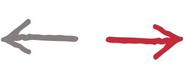
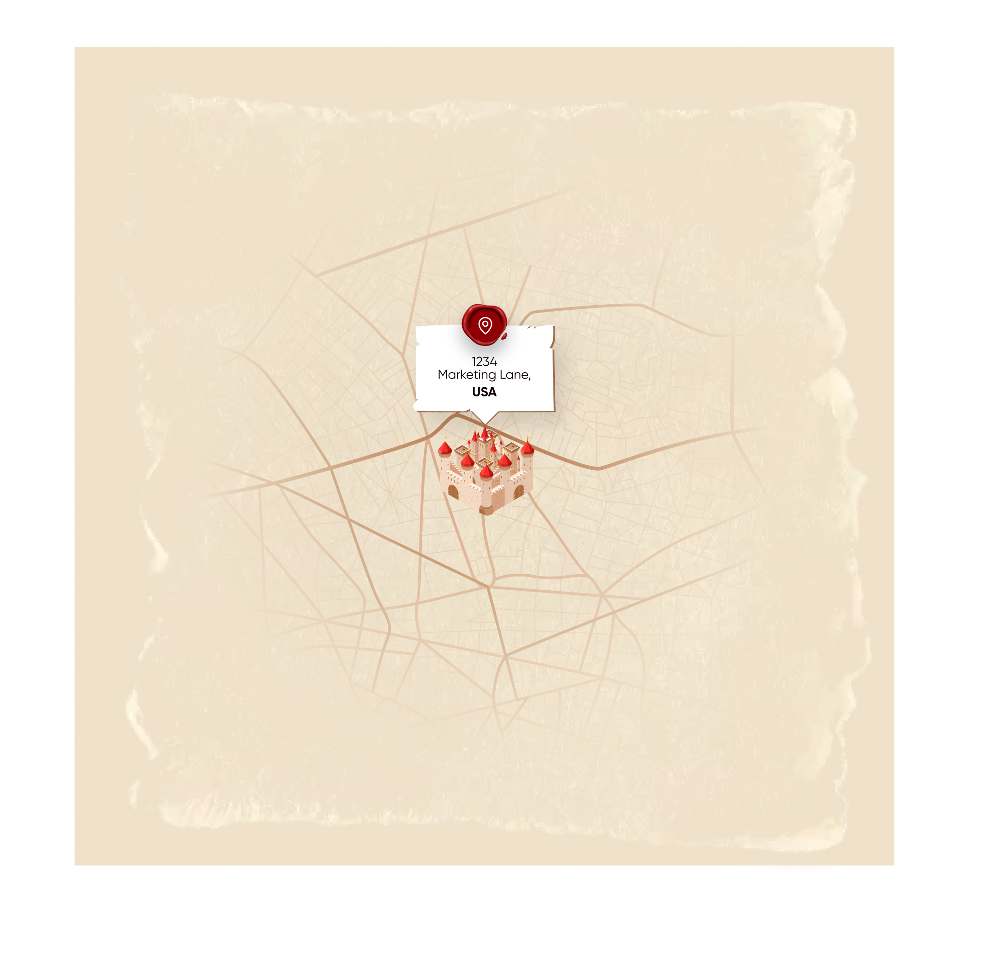

JAKE'S
FAVORITE
TOOLS.
Software he actually uses. Annotated. Updated when something better comes along.
This isn't a sponsored roundup. Every tool on this page is something Jake uses in his own work or recommends to clients based on real experience. If something stops earning its place, it comes off the list. If something new earns it, it goes on.
Some links may be affiliate links — clearly labeled. The recommendation comes first; the affiliate relationship follows, never the other way around.
One warning before you scroll: tools don't fix a broken sequence. Software amplifies whatever message you feed it — get the message right first. That's also why this list is short.
Stack last reviewed: June 2026.
Email & Marketing Automation
ActiveCampaign
Email • CRM • AutomationsAutomation is sequence made literal — the right message, the right moment, enforced by software. ActiveCampaign's segmentation and conditional logic is the best mid-market way to build it without hiring an engineer.
activecampaign.comKlaviyo
Email • SMS • E-commerceIf you run an e-commerce brand, nothing else comes close. The revenue attribution, the Shopify integration, the flow logic. Klaviyo is the default for a reason.
klaviyo.comBeehiiv
Newsletter • MonetizationThe best platform for building a newsletter with a monetization model built in from day one. The growth tools are useful, not feature bloat.
beehiiv.comContent Creation & Social
Riverside.fm
Podcast • Video RecordingRecords local video and audio from each participant at studio quality, then stitches it together. The best remote recording setup for anyone doing video podcasts.
riverside.fmDescript
Video Editing • TranscriptionEdit video by editing the transcript. Remove filler words in one click. The fastest way to go from raw recording to finished clip, especially for short-form content.
descript.comCanva
Design • Templates • BrandFor marketing teams without a full-time designer, Canva Pro fills the gap. The Brand Kit feature alone is worth the price if you have more than one person creating content.
canva.comBuffer
Social Scheduling • AnalyticsSimple, clean social scheduling that doesn't get in the way. The analytics are good enough to understand what's working without the noise of over-engineered alternatives.
buffer.comAnalytics & SEO
Ahrefs
SEO • Keyword Research • BacklinksThe best SEO toolset for understanding where organic traffic is coming from and where your competitors are winning it. The keyword difficulty scores are more reliable than alternatives.
ahrefs.comHotjar
Heatmaps • Session RecordingWatch exactly where visitors are clicking, scrolling, and rage-quitting. Heatmaps and session recordings reveal conversion problems that analytics dashboards will never show you.
hotjar.comGoogle Search Console
Organic Search • Indexing • FreeFree, authoritative data straight from Google. Most businesses set it up once and ignore it. Jake's take: the "Validate Fix" button is the industry's close-elevator-door button — press it, feel better, Google does what it wants anyway. The data underneath is still gold.
search.google.comShare of Brand Voice
The metric Jake calls the one most business owners overlook: how often your brand gets mentioned, searched, and cited versus your competitors. No single dashboard measures it — these are the two tools Jake names when hosts ask how.
SparkToro
Audience Research • MentionsWhere does your audience actually spend attention — which podcasts, channels, and voices do they trust? SparkToro answers with data instead of hunches, which is exactly where a Share of Brand Voice campaign starts.
sparktoro.comSearch Atlas
SEO Suite • Branded SearchTracks branded search volume and visibility over time — the raw inputs of Share of Brand Voice. Pair it with Search Console: if branded queries are climbing, the brand is compounding.
searchatlas.comAI & Writing
Jake's standing position: “When you use AI, you're accepting the center of the bell curve… it takes a human to connect with humans.” The tools below earn their place by saving hours — not by replacing the human.
Claude
AI Writing • Strategy • ResearchAnthropic's Claude is where Jake does most of his AI-assisted writing and strategy work. The reasoning is more nuanced, the outputs require less editing, and it handles long-form thinking better than alternatives.
claude.aiChatGPT
AI • Ideation • DraftsStill the best for rapid ideation, quick drafts, and anything that benefits from a broad knowledge base. Use it for the brainstorm; edit it like you wrote it yourself.
chatgpt.comHemingway Editor
Writing • Readability • FreePaste in any copy and it tells you exactly where you're being wordy, passive, or hard to read. Jake runs every important piece of content through it before it goes live.
hemingwayapp.comProductivity & Ops
Notion
Docs • Databases • ProjectsJake runs his entire knowledge base, content calendar, and client documentation in Notion. The flexibility to be a wiki, a project tracker, and a CRM all at once is the point.
notion.soLoom
Screen Recording • Async VideoRecord and send a 90-second video instead of writing a 500-word email. Jake uses Loom for client feedback, team instructions, and anything that's easier to show than explain.
loom.comCalendly
Scheduling • Booking • IntakeThe back-and-forth of scheduling kills more deals than people realize. Calendly removes it entirely. Jake uses it for all client bookings and adds an intake form to every meeting type.
calendly.comCRM & Sales
HubSpot
CRM • Pipeline • ReportingThe free CRM tier is solid and most businesses don't need to upgrade. For teams that do, the Sales Hub is the most intuitive pipeline management in the mid-market.
hubspot.comZapier
Automation • Integrations • No-CodeThe connective tissue between every other tool on this list. When a form fills, a contact gets added, a Slack message fires, and a task gets created. All automatically. Jake's stack would fall apart without it.
zapier.comWANT JAKE'S
OPINION ON
YOUR STACK?
Bring your current tool setup to a consulting session and Jake will tell you what to cut, what to add, and what's quietly draining your budget.
Book a Strategy SessionFrom $400. Prices on the page. No discovery-call maze.